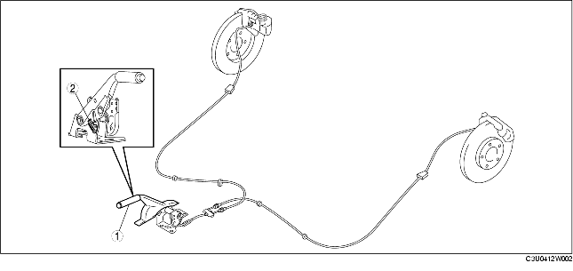

.
|
1
|
Levier de frein de stationnement
(voir la section REGLAGE DE LEVIER DE FREIN DE STATIONNEMENT.)
(voir la section RÉGLAGE DE LEVIER DE FREIN DE STATIONNEMENT.)
(voir la section DEPOSE/REPOSE DE LEVIER DE FREIN DE STATIONNEMENT.)
|
|
2
|
Contacteur de frein de stationnement
(voir la section INSPECTION DE CONTACTEUR DE FREIN DE STATIONNEMENT.)
|